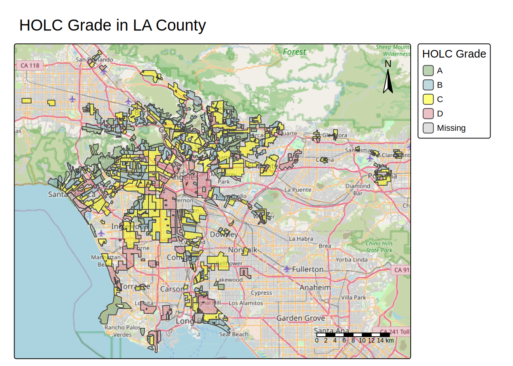
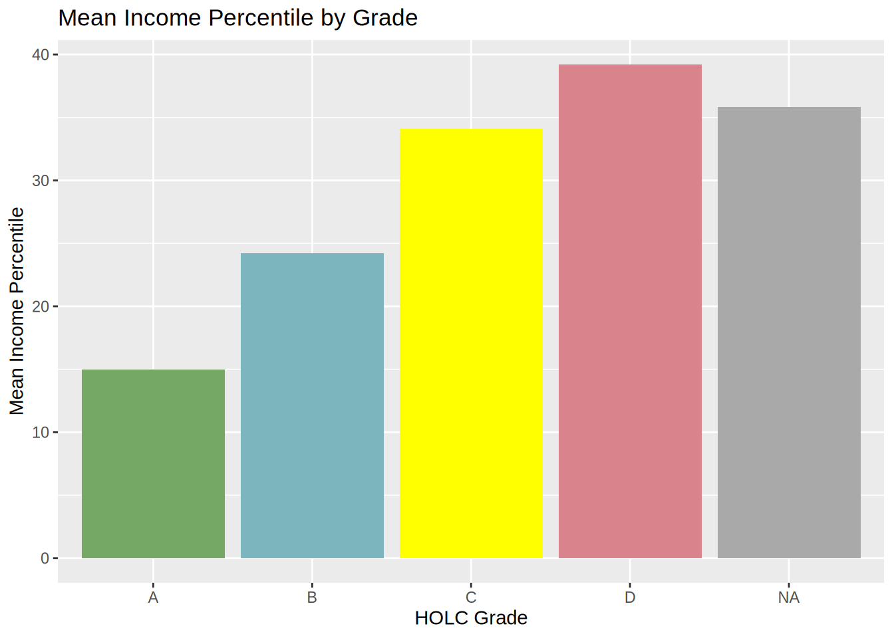
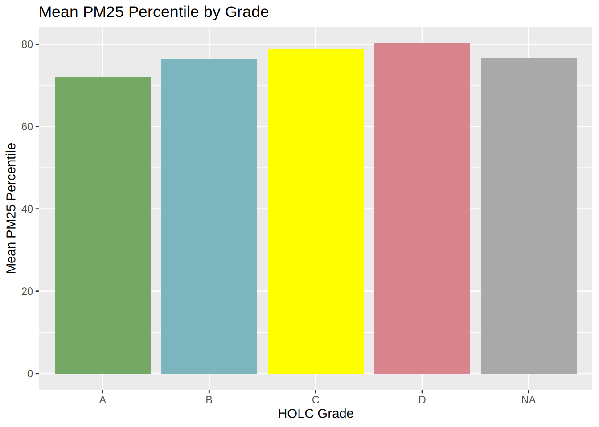
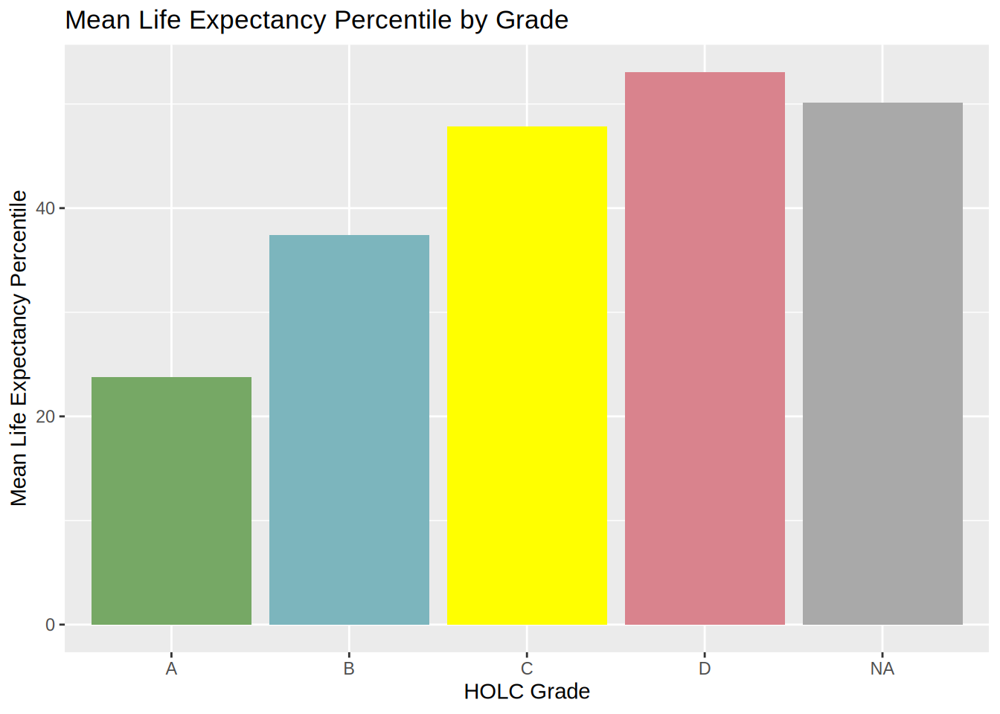
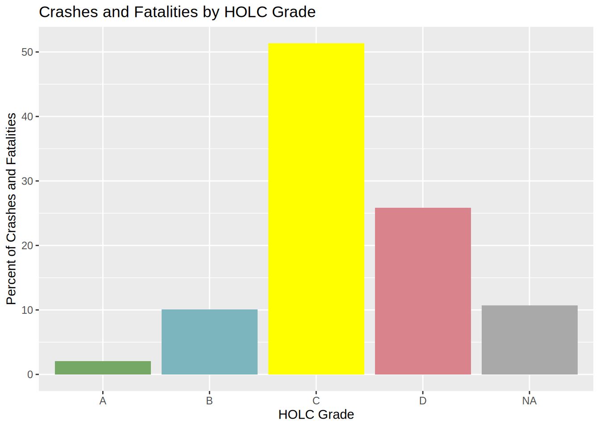

library(plyr)
library(sf)
library(tmap)
library(tidyverse)
library(spData)
library(here)
library(gt)Exploring patterns of environmental justice
Part 1: Legacy of redlining in current environmental (in)justice
Your first task is to explore historical redlining in Los Angeles and its legacy on present-day environmental justice.
# Import the data
LA <- st_read(here('data', 'mapping-inequality/mapping-inequality-los-angeles.json'))Reading layer `mapping-inequality-los-angeles' from data source
`/home/kellymorgan/meds/eds223-HW2/data/mapping-inequality/mapping-inequality-los-angeles.json'
using driver `GeoJSON'
Simple feature collection with 417 features and 14 fields
Geometry type: MULTIPOLYGON
Dimension: XY
Bounding box: xmin: -118.6104 ymin: 33.70563 xmax: -117.7028 ymax: 34.30388
Geodetic CRS: WGS 84ej_screen_LA <- st_read(here('data', 'ejscreen','EJSCREEN_2023_BG_StatePct_with_AS_CNMI_GU_VI.gdb')) |>
filter(
STATE_NAME == "California",
CNTY_NAME == "Los Angeles County"
)Reading layer `EJSCREEN_StatePctiles_with_AS_CNMI_GU_VI' from data source
`/home/kellymorgan/meds/eds223-HW2/data/ejscreen/EJSCREEN_2023_BG_StatePct_with_AS_CNMI_GU_VI.gdb'
using driver `OpenFileGDB'
Simple feature collection with 243021 features and 223 fields
Geometry type: MULTIPOLYGON
Dimension: XY
Bounding box: xmin: -19951910 ymin: -1617130 xmax: 16259830 ymax: 11554350
Projected CRS: WGS 84 / Pseudo-Mercatorcrashes <- read_csv('data/SWITRS_LA/Crashes.csv')Rows: 251100 Columns: 80
── Column specification ────────────────────────────────────────────────────────
Delimiter: ","
chr (45): COLLISION_TIME, OFFICER_ID, REPORTING_DISTRICT, CHP_BEAT_TYPE, CI...
dbl (33): CASE_ID, ACCIDENT_YEAR, JURIS, DAY_OF_WEEK, CHP_SHIFT, POPULATION...
date (2): PROC_DATE, COLLISION_DATE
ℹ Use `spec()` to retrieve the full column specification for this data.
ℹ Specify the column types or set `show_col_types = FALSE` to quiet this message.Create a map of historical redlining neighborhoods, including:
- neighborhoods colored by HOLC grade
- an appropriate base map
- a clear title and legend
# Create color palette for HOLC Grade visualizations
holc_color <- c("A" = "#76a865",
"B" = "#7cb5bd",
"C" = "#ffff00",
"D" = "#d9838d",
na.value = "#A9A9A9"
)LA_map <-
tm_basemap("OpenStreetMap") +
tm_shape(LA, is.main = TRUE) +
tm_polygons(
fill = "grade", # why isn't my map displaying the missing values (NAs) in grey?
fill.scale = tm_scale_categorical(
values = holc_color), # How do I make this transparent? alpha ?
fill_alpha = 0.5,
fill.legend = tm_legend(title = "HOLC Grade")
) +
tm_borders(
lwd = 0.5,
lty = "solid"
) +
tm_title("HOLC Grade in LA County") +
tm_legend(position = tm_pos_out("right", "center")) + # >>> Insert > Text (title)
tm_compass(position = c("right", "top")) + # Insert > North Arrow
tm_scalebar(position = c("right", "bottom")) + # Insert > Scale Bar
tm_layout(frame = TRUE) # Map Frame settings
LA_map── tmap v3 code detected ───────────────────────────────────────────────────────[v3->v4] `tm_legend()`: use 'tm_legend()' inside a layer function, e.g.
'tm_polygons(..., fill.legend = tm_legend())'
This message is displayed once every 8 hours.
Create a table summarizing:
- the percentage of census block groups that fall within each HOLC grade
- Also include the percent of census black groups that don’t fall within a HOLC grade in your table
- Hint: The HOLC data contains the grades and the EJScreen data contains the census blocks, so you will need to combine the data spatially before doing summary statistics. Once you combine and no longer need the geometries, you can use st_drop_geometry().
# First, check each dataset's crs:
if(st_crs(LA) == st_crs(ej_screen_LA)){
print("It's a match.")
}else{
print("Stop! Not a match.")
}[1] "Stop! Not a match."# What are the indv. dataset crs's?
st_crs(ej_screen_LA) # WGS 84 / Psuedo-Mercator, "EPSG", 3857Coordinate Reference System:
User input: WGS 84 / Pseudo-Mercator
wkt:
PROJCRS["WGS 84 / Pseudo-Mercator",
BASEGEOGCRS["WGS 84",
ENSEMBLE["World Geodetic System 1984 ensemble",
MEMBER["World Geodetic System 1984 (Transit)"],
MEMBER["World Geodetic System 1984 (G730)"],
MEMBER["World Geodetic System 1984 (G873)"],
MEMBER["World Geodetic System 1984 (G1150)"],
MEMBER["World Geodetic System 1984 (G1674)"],
MEMBER["World Geodetic System 1984 (G1762)"],
MEMBER["World Geodetic System 1984 (G2139)"],
MEMBER["World Geodetic System 1984 (G2296)"],
ELLIPSOID["WGS 84",6378137,298.257223563,
LENGTHUNIT["metre",1]],
ENSEMBLEACCURACY[2.0]],
PRIMEM["Greenwich",0,
ANGLEUNIT["degree",0.0174532925199433]],
ID["EPSG",4326]],
CONVERSION["Popular Visualisation Pseudo-Mercator",
METHOD["Popular Visualisation Pseudo Mercator",
ID["EPSG",1024]],
PARAMETER["Latitude of natural origin",0,
ANGLEUNIT["degree",0.0174532925199433],
ID["EPSG",8801]],
PARAMETER["Longitude of natural origin",0,
ANGLEUNIT["degree",0.0174532925199433],
ID["EPSG",8802]],
PARAMETER["False easting",0,
LENGTHUNIT["metre",1],
ID["EPSG",8806]],
PARAMETER["False northing",0,
LENGTHUNIT["metre",1],
ID["EPSG",8807]]],
CS[Cartesian,2],
AXIS["easting (X)",east,
ORDER[1],
LENGTHUNIT["metre",1]],
AXIS["northing (Y)",north,
ORDER[2],
LENGTHUNIT["metre",1]],
USAGE[
SCOPE["Web mapping and visualisation."],
AREA["World between 85.06°S and 85.06°N."],
BBOX[-85.06,-180,85.06,180]],
ID["EPSG",3857]]st_crs(LA) # WGS 84, "EPSG", 4326Coordinate Reference System:
User input: WGS 84
wkt:
GEOGCRS["WGS 84",
DATUM["World Geodetic System 1984",
ELLIPSOID["WGS 84",6378137,298.257223563,
LENGTHUNIT["metre",1]]],
PRIMEM["Greenwich",0,
ANGLEUNIT["degree",0.0174532925199433]],
CS[ellipsoidal,2],
AXIS["geodetic latitude (Lat)",north,
ORDER[1],
ANGLEUNIT["degree",0.0174532925199433]],
AXIS["geodetic longitude (Lon)",east,
ORDER[2],
ANGLEUNIT["degree",0.0174532925199433]],
ID["EPSG",4326]]# Set the same crs for each dataset
ej_screen_transform <- st_transform(ej_screen_LA, crs = st_crs(LA))
st_crs(ej_screen_transform) == st_crs(LA)[1] TRUE# TRUE# Fix HOLC geometries to solve join error
LA <- st_make_valid(LA)
# Joining datasets by geometries, default = st_intersect()
LA_left_join <-
st_join(LA, ej_screen_transform) |>
st_drop_geometry() |>
select(ID, grade) |>
group_by(grade) |>
summarize(Blocks = n()) |>
mutate(Percent = Blocks/sum(Blocks)*100) |>
rename(HOLC_Grade = grade)
LA_left_join %>%
gt() %>%
tab_header(title = md("Percentage of Census Block Groups per HOLC Grade"))| Percentage of Census Block Groups per HOLC Grade | ||
| HOLC_Grade | Blocks | Percent |
|---|---|---|
| A | 449 | 7.028804 |
| B | 1239 | 19.395742 |
| C | 3058 | 47.871008 |
| D | 1346 | 21.070758 |
| NA | 296 | 4.633688 |
Create at least two visualizations summarizing current conditions (from the EJScreen data) within HOLC grades using the mean of the following variables (you may combine variables in a single visualization or look at a single variable per plot):
- % low income
- percentile for Particulate Matter 2.5
- percentile for low life expectancy
- Use ggplot for your visualizations! You will first need to calculate mean of each variable grouped by HOLC grade.
# Joining datasets by geometries, default = st_intersect()
EJ_HOLC_left_join <-
st_join(LA, ej_screen_transform) |>
st_drop_geometry() |>
group_by(grade) |>
summarize(
mean_income = (mean(LOWINCPCT, na.rm = TRUE)*100),
mean_PM25 = mean(P_PM25, na.rm = TRUE),
mean_life_exp = mean(P_LIFEEXPPCT, na.rm = TRUE)
)income <- ggplot(EJ_HOLC_left_join, aes(
x = grade,
y = mean_income
)) +
geom_col(fill = holc_color) +
labs(
title = "Mean Income Percentile by Grade",
x = "HOLC Grade",
y = "Mean Income Percentile",
)
income
PM25 <- ggplot(EJ_HOLC_left_join, aes(
x = grade,
y = mean_PM25
)) +
geom_col(fill = holc_color) +
labs(
title = "Mean PM25 Percentile by Grade",
x = "HOLC Grade",
y = "Mean PM25 Percentile",
)
PM25
life_exp <- ggplot(EJ_HOLC_left_join, aes(
x = grade,
y = mean_life_exp
)) +
geom_col(fill = holc_color) +
labs(
title = "Mean Life Expectancy Percentile by Grade",
x = "HOLC Grade",
y = "Mean Life Expectancy Percentile",
)
life_exp
Write a brief paragraph reflecting on these results
- Interpret the patterns you observe in your results
- Discuss potential relationships between historical redlining grades and current environmental/socioeconomic conditions
Paragraph
Part 2: Legacy of redlining in pedstrian and bike accidents
For this assignment, you must produce the following based on observations from 2020-2025:
A figure summarizing the percent of observations within redlined neighborhoods within each HOLC grade
Create a visualizations that shows:
- The percentage of bike and pedestrian crashes and fatalities within each HOLC grade
- Include an appropiate title, axis labels, and legend
- Hints: Make sure to filter for bike and pedestrian crahes(PEDESTRIAN_ACCIDENT and BICYCLE_ACCIDENT). Look at the difference in NAs between POINT_X/POINT_Y and LONGITUDE/LATITUDE before you decide which to use. Ensure the SWITRS data and HOLC dataset have matching CRS’, then perform a spatial join to assign each crash to a corresponding HOLC grade.
- The percentage of bike and pedestrian crashes and fatalities within each HOLC grade
print(paste("POINT_X NAs = ", sum(is.na(crashes$POINT_X))))[1] "POINT_X NAs = 9484"print(paste("LONGITUDE NAs = ", sum(is.na(crashes$LONGITUDE))))[1] "LONGITUDE NAs = 97350"# Choose "POINT_X/POINT_Y" columnscrashes_filtered <- crashes |>
select(
ACCIDENT_YEAR,
PEDESTRIAN_ACCIDENT,
BICYCLE_ACCIDENT,
POINT_X,
POINT_Y
) |>
filter(
ACCIDENT_YEAR >= 2020 |
ACCIDENT_YEAR <= 2025
) |>
drop_na(
POINT_X,
POINT_Y
) |>
st_as_sf(
coords = c("POINT_X", "POINT_Y"),
crs = st_crs(LA)
)# First, check each dataset's crs:
if(st_crs(LA) == st_crs(crashes_filtered)){
print("It's a match.")
}else{
print("Stop! Not a match.")
}[1] "It's a match."crashes_left_join <-
st_join(LA, crashes_filtered) |>
st_drop_geometry() |>
select(
grade,
PEDESTRIAN_ACCIDENT,
BICYCLE_ACCIDENT
) |>
group_by(grade) |>
summarize(
total = sum(PEDESTRIAN_ACCIDENT == "Y",
BICYCLE_ACCIDENT == "Y",
na.rm = TRUE)
) |>
mutate(percent = total/sum(total)*100)
crashes_left_join# A tibble: 5 × 3
grade total percent
<chr> <int> <dbl>
1 A 360 2.04
2 B 1783 10.1
3 C 9057 51.3
4 D 4561 25.9
5 <NA> 1883 10.7 ggplot(crashes_left_join, aes(
x = grade,
y = percent
)) +
geom_col(fill = holc_color) +
labs(
title = "Crashes and Fatalities by HOLC Grade",
x = "HOLC Grade",
y = "Percent of Crashes and Fatalities",
)